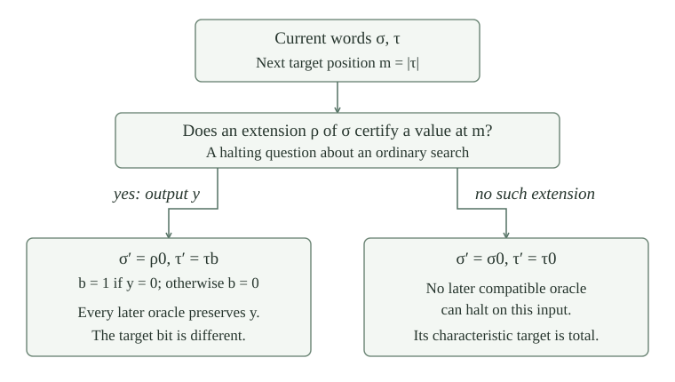

A binary word is a finite list \(\sigma\) of zeros and ones. Its length is \(|\sigma|\), and its positions start at zero. Write \(\sigma\preceq\rho\) when \(|\sigma|\le|\rho|\) and \(\sigma(q)=\rho(q)\) for every \(q<|\sigma|\). Write \(\sigma\preceq A\), for \(A\subseteq\mathbb N\), when \(\sigma(q)=\chi_A(q)\) at these positions. Thus a zero is a commitment to nonmembership, rather than an unanswered question.
The word \(\sigma b\) appends the bit \(b\). Let \(u_\sigma\) be its established list code, and let \(F_\sigma=\{q<|\sigma|:\sigma(q)=1\}\). The finite-oracle bit function satisfies \(\beta(u_\sigma,q)=\sigma(q)\) inside the word and is zero outside it. Prefix comparison, length, append, and bit access are ordinary primitive-recursive operations on these codes.
The same numerical word codes describe computable binary trees. There, deciding each finite allowed word is separated from computing a whole infinite sequence of compatible words.
Suppose \(\sigma_n\preceq\sigma_{n+1}\) and \(|\sigma_n|\ge n\). There is a unique set \(A\) extending every \(\sigma_n\). Its membership bit at \(x\) is \(\sigma_{x+1}(x)\).
The displayed bit is defined because \(|\sigma_{x+1}|\ge x+1\). For any \(n\) and \(x<|\sigma_n|\), compare \(\sigma_n\) and \(\sigma_{x+1}\) inside the later word \(\sigma_{\max(n,x+1)}\). Both have the same bit at \(x\). Thus the displayed set extends each word. Conversely any such set has the forced bit from \(\sigma_{x+1}\) at every \(x\), proving uniqueness.
Use the fixed ordinary primitive-recursive checker \(V(u,k,e,x)\) from . Zero means that its guarded bounded computation fails; \(y+1\) means success with output \(y\). Define
We say that \(\sigma\) certifies output \(y\) when \(D(\sigma,e,x)=y+1\). The word length is also the evaluator's allowance. Every query of this calculation is therefore below \(|\sigma|\); an out-of-range input is rejected before any oracle answer is supplied. This is a bounded certificate, and failure may only mean that the allowance was insufficient. Extending the word also makes a larger allowance available.
If \(\sigma\) certifies output \(y\), then every \(A\) extending \(\sigma\) satisfies \(\varphi_e^A(x)\downarrow=y\). Every longer word \(\rho\) extending \(\sigma\) also certifies that same output.
All queried bits are below \(|\sigma|\). The oracle \(A\), and also \(F_\rho\), agree there with \(F_\sigma\). The bounded-query agreement lemma transfers the successful calculation at its old allowance to either oracle. Bounded soundness gives the actual output for \(A\). For \(\rho\), resource monotonicity preserves the successful calculation when the allowance increases from \(|\sigma|\) to \(|\rho|\), proving the asserted certificate.
For every \(A,e,x,y\),
Moreover, the prefix on the right can be required to extend any prescribed finite prefix of \(A\).
For a halting computation choose an allowance \(k\) large enough for the bounded evaluator to succeed. Increase it if needed to exceed the length of the prescribed prefix. Take \(\sigma=A\mathbin{\upharpoonright}k\), the first \(k\) actual membership bits. The finite-oracle agreement lemma identifies its checked value with the successful calculation using \(A\). This produces the required certificate. The reverse implication is .
If one fixed program halts for every oracle on every input, these certificates give a computable uniform successful level: otherwise the tree of failing prefixes would have an infinite path. This is the compactness step in the truth-table characterization.
Let \(\sigma=[0]\), let \(e\) name the query program, and take input \(1\). The finite set \(F_\sigma\) is empty. Does its answer zero already force the answer of every set extending \(\sigma\)?
No. Both \(A=\varnothing\) and \(B=\{1\}\) extend this word, but the query returns zero for \(A\) and one for \(B\). With allowance \(|\sigma|=1\), the bounded certificate rejects input \(1\), so \(D(\sigma,e,1)=0\). A prefix containing position one can certify the appropriate answer. Treating the missing bit as an already committed zero would invalidate persistence.
For each oracle-program index \(e\), impose the diagonal requirements
An equality here means equality of partial functions, viewing the characteristic function as total. To satisfy \(R_e\), it suffices to find an input at which the computation diverges or returns a value different from \(\chi_B\). Outputs other than zero and one also count as disagreements. Since the numbering contains every finite oracle program, all \(R_e\) imply \(B\not\le_T A\), and all \(Q_e\) imply \(A\not\le_T B\).
Given \(e\) and words \(\sigma,\tau\), there are proper extensions \(\sigma',\tau'\) such that \(\varphi_e^A\ne\chi_B\) for every \(A,B\) extending \(\sigma',\tau'\), respectively.
Set \(m=|\tau|\), a position not yet committed in the target word. Ask whether some \(\rho\succeq\sigma\) has \(D(\rho,e,m)>0\).
If there is such a word, choose one and write its output as \(y\), so \(D(\rho,e,m)=y+1\). Put \(\sigma'=\rho0\), and append to \(\tau\) the bit \(b=1\) if \(y=0\), and \(b=0\) otherwise. Thus \(\tau'=\tau b\) and \(b\ne y\), including when \(y>1\). Persistence gives \(\varphi_e^A(m)=y\ne b=\chi_B(m)\). Appending zero to \(\rho\) ensures proper growth even if \(\rho=\sigma\).
If there is no such word, put \(\sigma'=\sigma0\) and \(\tau'=\tau0\). For any \(A\) extending \(\sigma'\), a halting value at \(m\) would have a certifying prefix extending \(\sigma\), by . This contradicts the case assumption. Thus the computation diverges at \(m\), while \(\chi_B(m)\) is defined. Both cases satisfy the requirement for all later extensions.

The alternating finite-extension construction starts with \(\sigma_0=\tau_0=[]\). At round \(n\), apply to \((n,\sigma_n,\tau_n)\) to obtain \((\widehat\sigma_n,\widehat\tau_n)\), settling \(R_n\). Apply the same operation with the roles exchanged to \((n,\widehat\tau_n,\widehat\sigma_n)\). Reverse the resulting pair to call it \((\sigma_{n+1},\tau_{n+1})\); this settles \(Q_n\).
Make the choices definite: enumerate candidate words by decoding numerical list codes and reducing their entries modulo two, and take the first candidate passing the test. This enumeration includes every binary word. Both words extend their earlier versions properly at each of the two operations. In particular \(|\sigma_n|,|\tau_n|\ge n\). Define \(A\) and \(B\) by their compatible unions, as in .
There are sets \(A,B\subseteq\mathbb N\) such that \(A\not\le_T B\) and \(B\not\le_T A\).
Take the two unions from . Fix \(e\). The first operation of round \(e\) settles \(R_e\) for every pair extending its output words. The second operation and every later round preserve these words, and the final unions extend them. Therefore \(R_e\) holds. The second operation settles \(Q_e\), which is preserved for the same reason. This works for every \(e\), so excludes every oracle program in either direction.
Given numerical codes for \(e,\sigma,\tau\), the predicate
is c.e., uniformly in all three parameters. One fixed ordinary search program halts exactly on these inputs, returning the least successful word code.
Decode a candidate number into a finite list and reduce each entry modulo two; this lists all binary words. Length and prefix comparison are primitive recursive: compare the lengths, then compare the finitely many bits at positions below \(|\sigma|\). The value \(D\) is jointly primitive recursive by its fixed checker. Consequently the conjunction “extends \(\sigma\) and certifies a value at \(|\tau|\)” is a total computable candidate test. Search candidate codes in order until it is true. The search halts exactly when such a word exists, and then returns the first code that passes. The parameter theorem supplies a total computable index map for freezing the three parameters.
The definite extension operation in is total computable relative to \(0'=J(\varnothing)\), jointly in its finite inputs.
Use to obtain the ordinary search program with the given parameters. The ordinary-to-empty-jump recoding turns its halting question into one membership query to \(0'\). If the answer is no, append zero to both old words. If the answer is yes, run the ordinary search until its first successful candidate appears, read its certified output, and perform the opposite-bit extension. The search is run only in the branch in which its termination has been established.
This can be expressed using the established relative closure rules without evaluating a divergent unused branch. For example, after obtaining the answer bit, search for the least candidate satisfying “the answer is zero and this candidate is zero, or this candidate passes the extension test.” In the negative case the dummy candidate zero succeeds; in the positive case a real candidate succeeds. This search always terminates. Ordinary coded-list operations then select and construct the corresponding output pair. The resulting relative program is total on every finite input.
The same halting-oracle search method gives a fixed deterministic selector for arbitrary c.e. collections of binary words. It either chooses an extending member or certifies that no such extension exists; iterating these choices constructs 1-generic sets.
The definite construction gives incomparable sets satisfying \(A\le_T0'\) and \(B\le_T0'\).
Encode each pair of words by one natural number. A round consists of two applications of the total relative extension operation, with an exchange of coordinates between them. Primitive recursion in the established relative computability class therefore computes the pair \((\sigma_n,\tau_n)\) from \(n\), using only \(0'\). The numerical stage state retains both words, so the recursion has no access to an already completed infinite set.
On input \(x\), compute round \(x+1\), then return \(\sigma_{x+1}(x)\) or \(\tau_{x+1}(x)\). Length growth makes these accesses defined. The union lemma identifies them with \(\chi_A(x)\) and \(\chi_B(x)\). These are total characteristic programs using oracle \(0'\), which proves the two reductions. Incomparability is the already proved requirement argument for these same choices.
For the constructed sets,
Here \(\mathbf0'=[J(\varnothing)]\). Both sets are also \(\Delta_2\), by Post’s decision characterization.
If \(A\) were computable, it would reduce to every oracle, in particular to \(B\), contradicting incomparability. The same applies to \(B\); the least-degree characterization makes both degrees positive. The halting bounds give the upper comparisons. If \(0'\le_T A\), transitivity with \(B\le_T0'\) would give \(B\le_T A\), again a contradiction. Exchanging the sets proves strictness of the other upper comparison. Post’s theorem gives the last classification for these same sets.
Must a set computable from \(0'\) be c.e.? Does the finite-extension construction supply ordinary enumerations of its sets, or construct c.e. representatives of their degrees?
A set computable from \(0'\) need not be c.e.: the complement of the ordinary halting set is not c.e., although reversing the halting answer decides it from \(K\), hence from \(0'\). This is a counterexample about sets; its degree does have the c.e. representative \(K\).
For the particular constructed \(A,B\), the argument supplies relative decision procedures and does not establish ordinary enumerations or c.e. representatives. The choice to follow the divergence branch uses a negative answer to an ordinary halting question, and finite words commit permanent zero bits as well as one bits. The finite-injury construction solves the c.e. version of Post’s problem by effective finite stages and a proof that every oracle requirement eventually succeeds. Nothing here asserts that these degrees cannot have c.e. representatives.